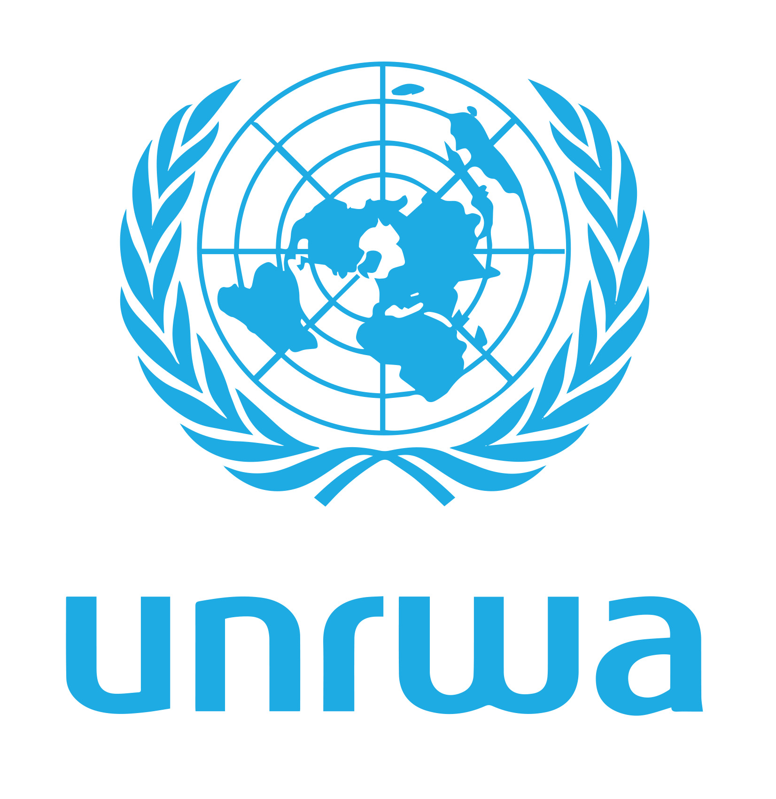

Opções de doação:

UNRWA
Fornece educação, saúde, serviços sociais e assistência de emergência a refugiados palestinos em Gaza, Cisjordânia, Líbano, Síria e Jordânia.
As Perdas Humanitárias na Guerra entre Israel e Palestina O conflito entre Israel e Palestina é uma das crises mais complexas e duradouras da história contemporânea, e suas perdas humanitárias são uma ferida aberta que se aprofunda a cada dia. Longe dos debates políticos e das estratégias militares, o que realmente ressoa é o custo humano devastador, que afeta milhões de vidas em ambos os lados, mas desproporcionalmente a população palestina.
Desde o início do conflito, e em especial nas escaladas recentes, a realidade para civis é de constante terror. Crianças, mulheres e idosos são frequentemente as maiores vítimas. Milhares de vidas foram perdidas, transformando famílias inteiras em estatísticas dolorosas. Os números de mortos e feridos se acumulam, e cada um deles representa uma história interrompida, sonhos desfeitos e um luto inimaginável.
Além das mortes, o conflito gera um êxodo forçado em massa. Centenas de milhares de pessoas são deslocadas de suas casas, tornando-se refugiados em sua própria terra ou em países vizinhos. A perda de lares, a interrupção da educação e a fragmentação de comunidades inteiras são cicatrizes invisíveis que persistem por gerações. A infraestrutura civil, incluindo hospitais, escolas e redes de saneamento, é frequentemente danificada ou destruída, agravando ainda mais a crise humanitária e dificultando a recuperação.
Fornece educação, saúde, serviços sociais e assistência de emergência a refugiados palestinos em Gaza, Cisjordânia, Líbano, Síria e Jordânia.
| Sobre o COD: | Sobre Nós: | Contate-nos: |
|---|---|---|
| ©CallofDonation | Criado por: | Callofdonation@gmail.com |
| é um site de arrecadação de | Artur Oliveira | |
| fundos para vítimas de guerra | Andrey Tavares | |
| Éric Alves | ||
| Gabriel Ferreira |